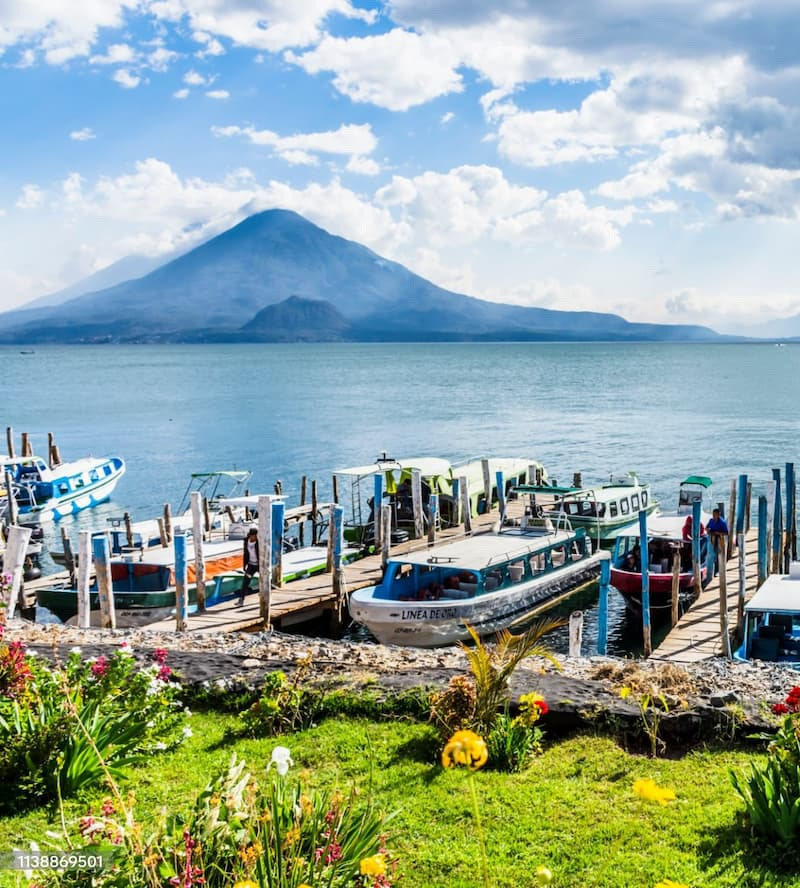

My favorite color is Panajachel, it is located by lake Atitlan which is a beautiful lake in Guatemala
This city is very colorful and full of life, being next to a lake also gives it a different vibe
